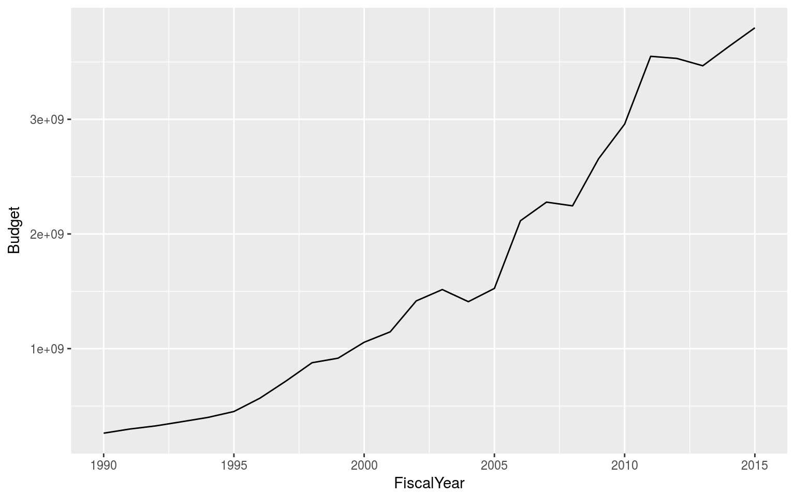
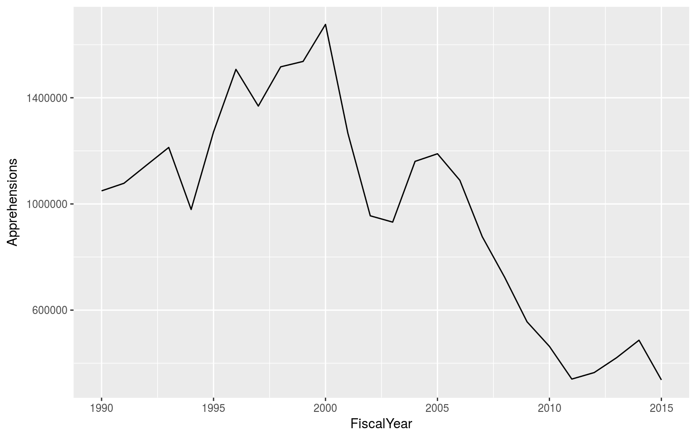
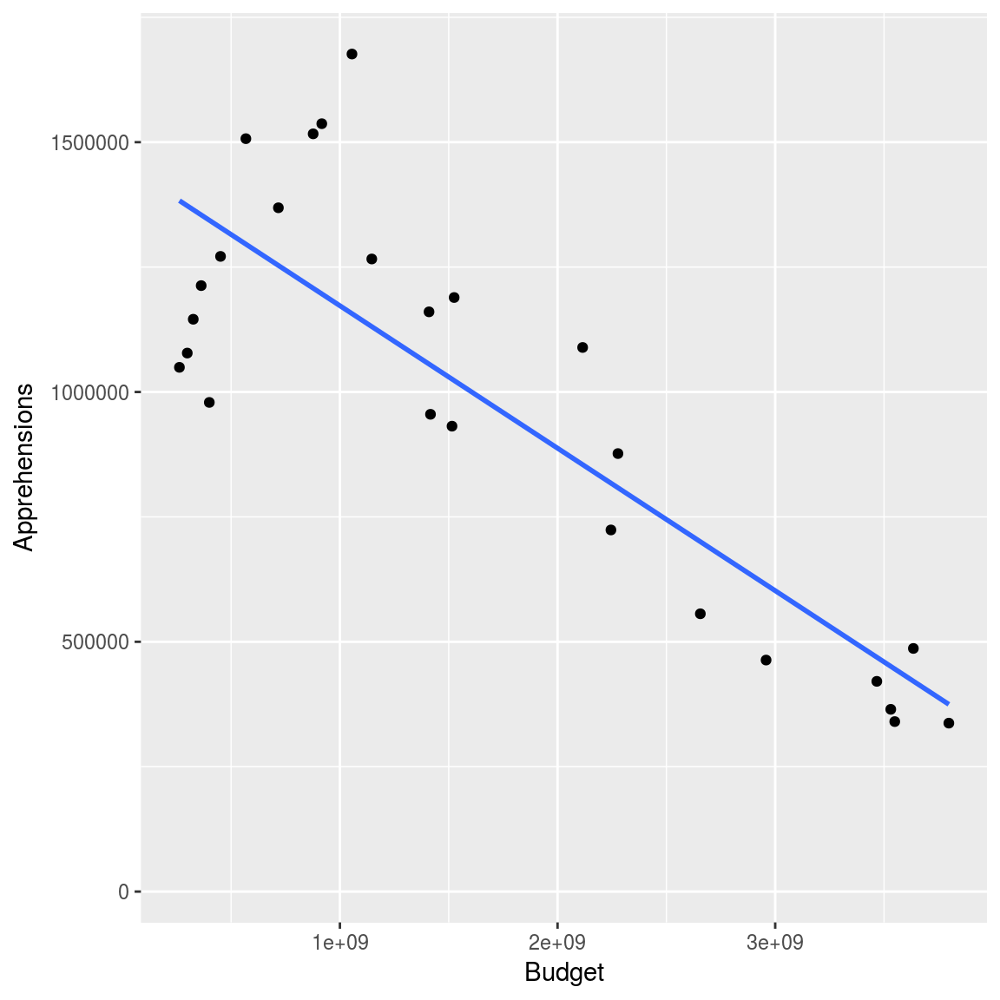
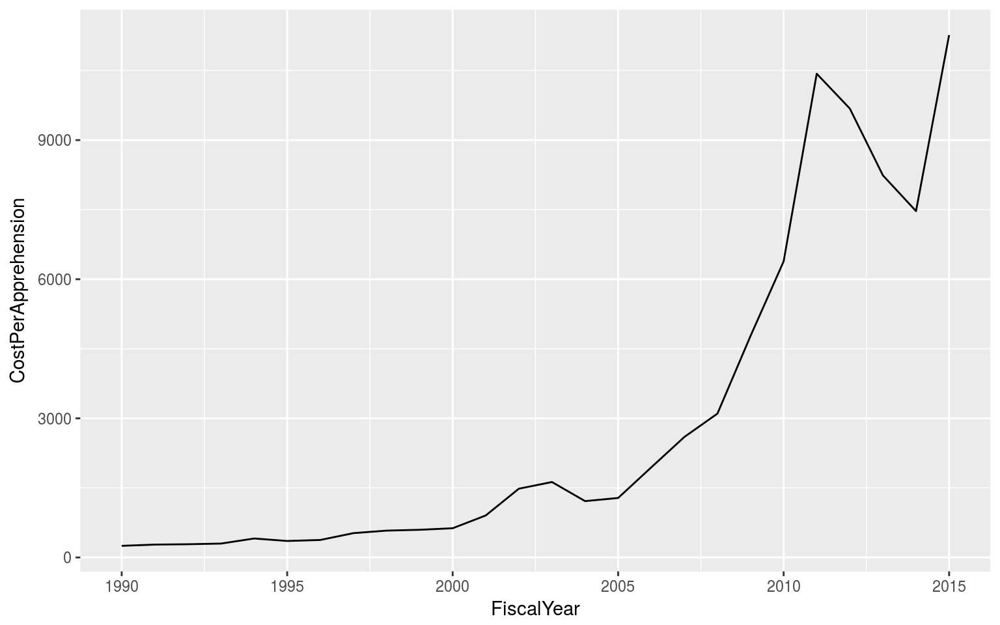

Borders
Borders
Introduction
Specifically US Borders. Specifically, the US-Mexico Border.
US Customs and Border Patrol’s reputation leaves something to be desired. The concerns about Border Partol are not new.
Note on language: there’s no legal ambiguity that crossing a national border without permission to do so, either explicitly (e.g. through a crossing point with a visa) or implicitly (e.g. between states within the European Union). It is thus factually correct to observe that people who cross a national border without permission to do so are in violation of the law. They have illegally immigrated. That said, the nation into which they’ve crossed does not assert that their existence is in violation of law, only their presence in that nation. Accordingly, I’m opting to avoid the title of “illegal immigrant” for the more neutral “undocumented immigrant”. Assume for the remainder of this essay that references to “undocumented immigrants” actually means “people who entered the United States illegally.” For a useful list of discussions on the topic, please see Open Borders’ Reference on the Topic.
The Debate
The Case for Open Borders
Labor Market Efficiency
Human Rights
The Case for Closed Borders
If the governed want to exclude foreigners, it is their right to call for the government to do so, and the government’s responsibility to respond to that call.
Economic Welfare: We enjoy a high standard of living because the government provides services that improve out lifestyles. However, larger populations reduce the government’s ability to provide some of these services.
Middle Grounds
The case for Open Borders with nations that have more progressive welfare systems than the US.
Who Immigrates?
Why do people leave their homes to make the dangerous trek across the Southwest border into the United States?
Economic Migrants
Why do people leave their homes to make the dangerous trek across the Southwest border into the United States?
Where are they coming from?
Unaccompanied Alien Children and other Refugees
Why do children leave their homes to make the dangerous trek across the Southwest border into the United States?
Where are they coming from?
“Bad Guys”
Drug runners, Alien Smuggling Organizations (ASOs) and their Coyotes
Why do people leave their homes to make the dangerous trek across the Southwest border into the United States?
Where are they coming from?
Getting Here
The Train of Death
Alien Smuggling Organizations - Coyotes
Getting In
The US-Mexico border is not heavily guarded between population centers. Border protections span from nothing to 18-foot-high walls.
How do they get in?
Living in the US
How many undocumented immigrants are living in the United States?
How does living in the US affect their lifespan/health?
Staying Under the Radar
Cash-for-Labor markets
Getting Caught
How do they get caught?
What happens when they do? Detention Facilities
Going Back
Who Enforces the Border?
US Customs and Border Protection
Growing Budget:
nationFYear %>%
filter(!is.na(Budget)) %>%
ggplot(aes(x=FiscalYear, y=Budget)) +
geom_line()
At the same time, the number of apprehensions has been declining:
nationFYear %>%
filter(!is.na(Budget)) %>%
ggplot(aes(x = FiscalYear, y = Apprehensions)) +
geom_line()
The combination of these factors is an agency whose effectiveness is inversely proportional to its budget.
ggplot(nationFYear, aes(x = Budget, y = Apprehensions)) +
geom_point() +
geom_smooth(method = "lm", se = FALSE)## Warning: Removed 171 rows containing non-finite values (stat_smooth).## Warning: Removed 171 rows containing missing values (geom_point).
And this degree of inefficiency is growing over time.
nationFYear %>%
mutate(CostPerApprehension = Budget/Apprehensions) %>%
filter(!is.na(CostPerApprehension)) %>%
ggplot(aes(x=FiscalYear, y=CostPerApprehension)) +
geom_line()